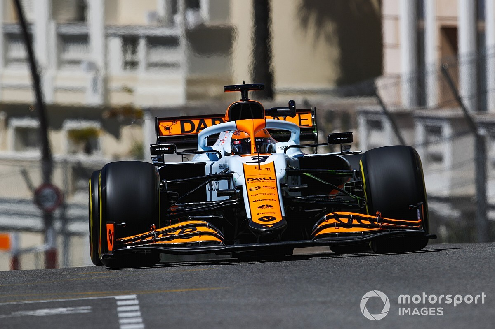

Daniel Joseph Ricciardo è nato a Perth il 1º luglio 1989, è un pilota automobilistico australiano, attivo in Formula 1 con la McLaren. Cresciuto sportivamente nel vivaio del Red Bull Junior Team, è stato campione della Formula Renault WEC nel 2008 e della F3 britannica con la Carlin nel 2009; primo pilota dell'Australia Occidentale a gareggiare in Formula 1, è attivo nella massima serie automobilistica dal 2011. Dal 2021 corre per la McLaren. È soprannominato "The Honey Badger", il tasso del miele, perché, secondo lui, "è l'animale più impavido al mondo. Quando lo guardi sembra molto carino, ma se provi ad entrare nel suo territorio diventa molto feroce, non si spaventa di fronte a nulla, tigri o pitoni. Cambia molto rapidamente, ma è un bravo animale". L'animale è raffigurato nella parte posteriore del suo casco. Il suo numero di gara è il 3. Ricciardo fece il suo esordio con una vettura di Formula 1 quando partecipò con la Red Bull Racing al test per giovani piloti tenutosi sul circuito di Jerez dal 1º al 3 dicembre 2009. Il giorno finale fece segnare il tempo migliore, l'unico sotto l'1'18". Successivamente Ricciardo venne indicato insieme a Brendon Hartley come pilota collaudatore per il team austriaco e per il suo team satellite, la Scuderia Toro Rosso, per l'annata 2010. Al termine di questa stagione prese parte al test per giovani piloti svoltosi sul circuito di Yas Marina ad Abu Dhabi. Al volante della Red Bull RB6 risultò il più veloce in tutte e quattro le sessioni di test e nell'ultima ottenne un tempo di un secondo e due decimi più basso di quello della pole, fatta segnare da Sebastian Vettel sullo stesso circuito nel Gran Premio della settimana precedente, grazie alla migliore gommatura della pista e alla mancanza dei piloncini di gomma che, posti all'interno di talune curve, non consentivano ai piloti del Gran Premio di affrontare le stesse con più decisione. Venne nominato nuovamente pilota di riserva per Toro Rosso e Red Bull per la stagione 2011, partecipò ai test di pre-campionato a Jerez e Barcellona e alla prima sessione di prove libere del venerdì negli otto Gran Premi precedenti il suo esordio in gara con l'HRT nel GP di Silverstone. Nella stagione 2013, a luglio, partecipò ai test per giovani piloti di Silverstone, aperti anche ai titolari per testare le nuove gomme Pirelli, a bordo della sua Toro Rosso e anche della Red Bull RB9, facendo segnare rispettivamente il primo e terzo tempo con le due vetture durante la seconda delle tre giornate.  A partire dal Gran Premio di Gran Bretagna 2011 lasciò il ruolo di terzo pilota della Scuderia Toro Rosso per quello di titolare alla HRT, sostituendo Narain Karthikeyan nelle rimanenti gare della stagione eccetto che in India, dove Ricciardo corse con la vettura di Vitantonio Liuzzi dato il rientro di Karthikeyan per quella sola corsa. I migliori risultati in qualifica furono due ventunesimi posti in India e ad Abu Dhabi, la posizione in griglia più avanzata fu la 20ª di Abu Dhabi mentre in gara i migliori piazzamenti furono due diciottesimi posti, ottenuti nei Gran Premi d'Ungheria e d'India; nella classifica finale si piazzò 27º, senza far segnare alcun punto. Nel primo Gran Premio con la scuderia austriaca, in Australia, dopo aver concluso la gara al secondo posto venne squalificato per irregolarità riscontrate nel flusso del carburante. Ottenne i suoi primi punti con la Red Bull in Bahrein, giungendo quarto, dopo un'intensa lotta per il podio con Sergio Pérez. Nel Gran Premio di Spagna salì per la prima volta sul podio in Formula 1, terminando terzo davanti al compagno di squadra Sebastian Vettel. Dopo un altro terzo posto a Monaco, nel successivo Gran Premio del Canada Ricciardo ottenne la sua prima vittoria iridata, precedendo al traguardo Nico Rosberg e Vettel. In Gran Bretagna terminò nuovamente terzo. Raggiunse nuovamente il successo nel Gran Premio d'Ungheria, dove ottenne la sua seconda vittoria nel Mondiale, precedendo al traguardo Fernando Alonso e Lewis Hamilton. La terza affermazione in carriera arrivò nel successivo Gran Premio del Belgio approfittando del contatto tra le Mercedes di Rosberg e Hamilton. In seguito tornò sul terzo gradino del podio a Singapore e negli Stati Uniti, mentre nell'ultima gara ad Abu Dhabi giunse quarto dopo essere partito dai box a causa di una penalizzazione per irregolarità tecnica, facendo segnare per la prima volta nella sua carriera in Formula 1 il giro più veloce della gara. Concluse la stagione al terzo posto in classifica con 238 punti, dietro ai due piloti della Mercedes. Fresco dell'inaspettato addio alla Red Bull, motivato dallo stesso Ricciardo come un tentativo di ricominciare altrove, la prima stagione in Renault del pilota si apre con un disastroso debutto al Gran Premio d'Australia, nel corso del quale il pilota è costretto al ritiro, a causa di diversi problemi tecnici scaturiti dalla rottura dell'ala anteriore già alla partenza. Fanno seguito risultati deludenti e sofferti, spesso fuori dalla zona punti, complici i limiti della nuova scuderia. Nel Gran Premio d'Italia Ricciardo ottiene il suo miglio risultato stagionale, grazie al quarto posto. Nelle ultime gare la monoposto ritrova competitività, con l'australiano che ottiene due sesti posti nelle ultime tre gare. Termina la stagione con 54 punti, facendo segnare 17 punti in più del compagno di squadra Nicolas Hülkenberg, pur non riuscendo per la prima volta dal 2013 a conquistare alcun podio. A giugno 2020, prima che la stagione abbia inizio, viene annunciato l'ingaggio del pilota australiano da parte della McLaren.. Dopo un inizio di stagione discreto, con un settimo e un sesto posto ottenuti nelle prime due gare, Ricciardo inizia a soffrire il confronto con il compagno di squadra Lando Norris. Nel Gran Premio di Monaco Ricciardo arriva dodicesimo, doppiato dal compagno di squadra che conquista il podio. Dopo aver raccolto un piazzamento in zona punti nel Gran Premio d'Azerbaigian arrivando nono, al Paul Ricard durante il Gran Premio di Francia raccoglie il sesto posto. Al Gran Premio d'Austria arriva settimo, ottienendo un quinto posto nella gara successiva a Silverstone. Al rientro dalla pausa estiva le cose iniziano a migliorare, infatti nel Gran Premio del Belgio a Spa raggiunge la quarta posizione in qualifica, confermando la medesima posizione. A Monza, dopo aver conquistato nella sprint race il terzo posto ed essere partito dalla seconda posizione in griglia, vince il Gran Premio, conquistando anche il giro veloce all'ultima tornata, davanti al compagno di squadra Lando Norris, centrando la doppietta e tornando al successo dopo tre anni. Con questa vittoria raggiunge gli 8 successi personali in carriera. Al successivo Gran Premio di Russia conquista il quarto posto, ancora davanti al proprio compagno di squadra. Nel Gran Premio di Turchia termina fuori dalla zona punti e raccoglie un quinto posto al successivo Gran Premio degli Stati Uniti. Nelle tre gare successive non ottiene punti. Nel Gran Premio d'Arabia Saudita Ricciardo si classifica in quinta posizione. Con un dodicesimo posto ad Abu Dhabi, Ricciardo chiude la stagione in ottava posizione con 115 punti.